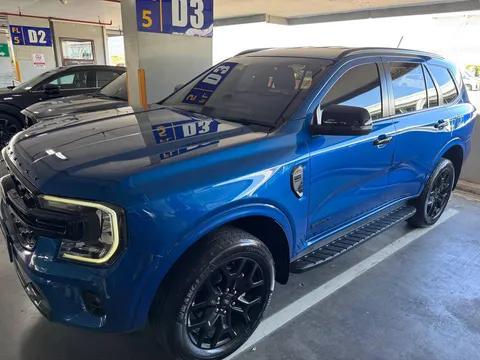
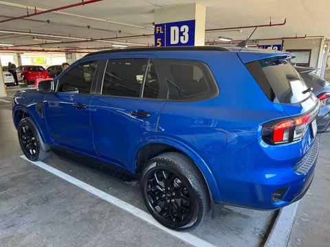
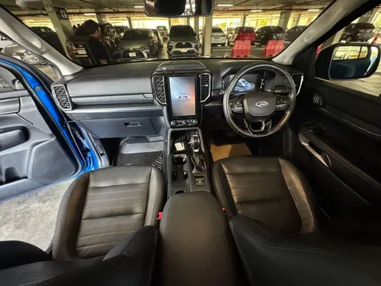

В отпуске брал в аренду Ford Everest, почему бы не рассказать про него немного. Выбор был обусловлен двумя основными факторами. Во-первых, в юго-восточной Азии имеет место быть правило дорожного движения "кто больше, тот и прав", так что компактные легковушки отметаем. Во-вторых, мне всегда интересно поездить на чем-то новом, особенно если такие машины встретишь не везде.
Everest - как раз одна из таких машин. Это не "глобальная" модель, они встречаются только на азиатских рынках и в центральной Америке. Это довольно распространенная практика - модели, адаптированные для развивающихся стран, не будут пользоваться спросом, скажем, в Европе или Северной Америке. В данном случае модель получилась из пикапа Ford Ranger путем изменений в задней части кузова и подвески - тут пружины вместо рессор.
Машина очень большая (и местами ее ширина вызывала некоторые неудобства, особенно с поправкой на правый руль - левый габарит я представлял очень условно), но при этом очень простая и дешевая. Все довольно примитивно и аскетично. Впрочем, в некоторых моментах дань моде выливалась в абсолютно лишние изыски. Например, огромный экран, который при этом совершенно бестолков.
Салон форда просторный и практичный, но эргономика разочаровывает. Удобно устроиться за рулем так и не удалось, посадка через одно место. Уж не знаю, списывать это на особенности "грузового" донора или на азиатскую целевую аудиторию. В остальном органы управления неплохи, привыкания машина не требует, сел и поехал (как мнимум, если вы уже покатались на самых разных авто). В этот раз даже дворники вместо поворотников включил лишь раз за неделю ;)
Что точно понравилось - это силовая установка. Тяговитый дизелёк не претендует на спорт, но дернуть мопеды со светофора как-то может. Десятиступенчатая коробка отлично настроена под мотор - тяга есть всегда, переключается незаметно. В прошлый раз в Тае у меня был дизельный Хайлюкс на механике, и вот там я замучался подбирать передачу под каждый холм, коих на местности хватает.
А вот рулежка - это фиаско. Понятное дело, что ожидать от полноразмерного рамного внедорожника управляемости спорткара не стоило бы, но в паре моментов было прям неприятно. Например, когда тебе нужно резко объехать внезапное препятствие, а от поворота руля до изменения траектории проходит не меньше полсекунды, это страшновато.
Итого, машина вполне неплоха. Свои задачи выполняет отлично. При этом стандартам взыскательной аудитории отвечать едва ли сможет, потому и остается преимущественно в Азии. Будете в юго-восточной Азии - можно смело брать в аренду, но будьте готовы немножко страдать от избыточных габаритов.


